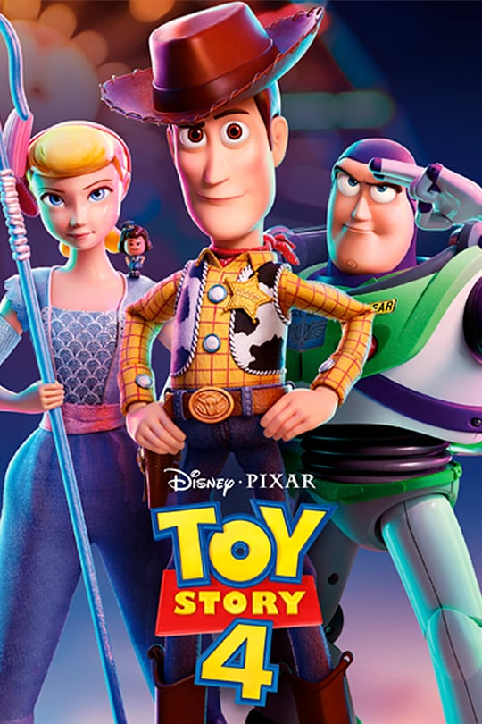
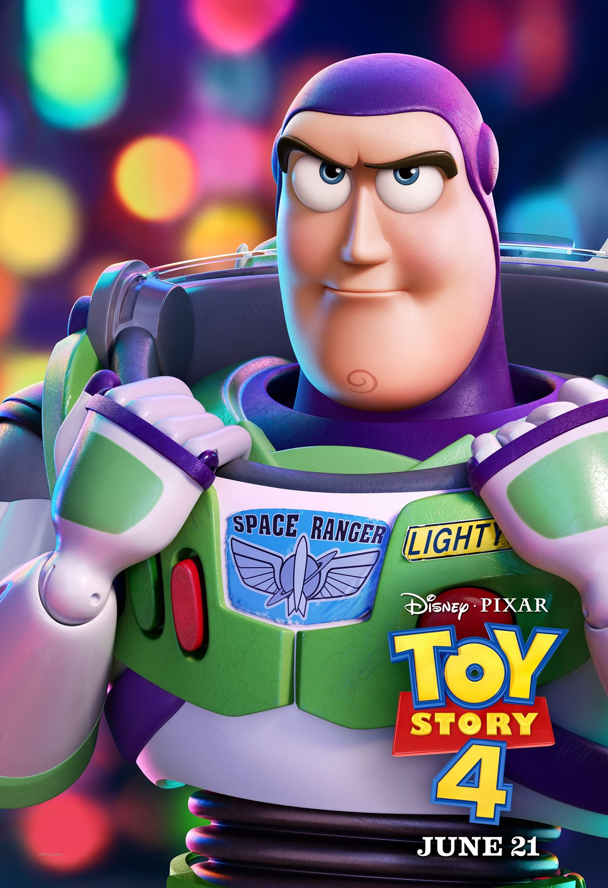

Toy Story
 La historia sigue las aventuras de un grupo de juguetes vivientes, en particular del vaquero Woody y el guardián espacial Buzz Lightyear. Si bien al principio rivalizan entre sí, conforme transcurre la trama se van volviendo amigos. Tras su estreno, Toy Story se convirtió en la cinta más taquillera de EE. UU. y Canadá en su primer fin de semana de exhibición.1 En total recaudó más de 191 millones USD en ambos países, y más de 361 millones adicionales a nivel internacional. Se hizo acreedora a críticas positivas en su gran mayoría, en las que se elogió la innovación técnica de la animación y el guion.
La trama de Toy Story aborda esencialmente el concepto de que «los juguetes cobran vida cuando no los estamos mirando» y disfrutan que los seres humanos los utilicen para jugar,9 aunque cada uno posee su propia personalidad que les confiere cierta naturaleza humana.10 Una de sus temáticas principales es la amistad entre «Woody y Buzz; un camino que viene del odio/envidia, y pasa por el conocimiento propio y del otro, y por la donación hacia el otro, necesaria para la no autodestrucción. Y una amistad que se refuerza por una misma misión: el ser los juguetes de Andy, que les echa de menos». La canción «You've got a friend in me» ahonda en el significado de este elemento, al exponer que «aunque pasen los años, nuestra amistad no morirá, verás que es nuestro destino [porque] tienes un amigo en mí». El filme también refleja las consecuencias de los celos ante «la posibilidad de que alguien nuevo le robe el afecto a alguien que amamos».
Toy Story se completó con un presupuesto de 30 millones USD y un equipo conformado por 110 empleados, a diferencia de una de las últimas producciones de Disney en aquellos años, El rey león (1994), que requirió un presupuesto de 45 millones USD y un equipo de 800 personas. El director habló sobre los desafíos que implicó la animación por computadora en la película: «Tuvimos que hacer que todas las cosas lucieran más orgánicas. Cada hoja de césped tuvo que ser creada desde cero. Asimismo, nos dimos a la tarea de darle a ese universo un sentido de realismo. Por lo tanto, las puertas lucen golpeadas y los pisos se ven desgastados» 
La trama de Toy Story aborda esencialmente el concepto de que «los juguetes cobran vida cuando no los estamos mirando» y disfrutan que los seres humanos los utilicen para jugar,9 aunque cada uno posee su propia personalidad que les confiere cierta naturaleza humana.10 Una de sus temáticas principales es la amistad entre «Woody y Buzz; un camino que viene del odio/envidia, y pasa por el conocimiento propio y del otro, y por la donación hacia el otro, necesaria para la no autodestrucción. Y una amistad que se refuerza por una misma misión: el ser los juguetes de Andy, que les echa de menos». La canción «You've got a friend in me» ahonda en el significado de este elemento, al exponer que «aunque pasen los años, nuestra amistad no morirá, verás que es nuestro destino [porque] tienes un amigo en mí». El filme también refleja las consecuencias de los celos ante «la posibilidad de que alguien nuevo le robe el afecto a alguien que amamos».